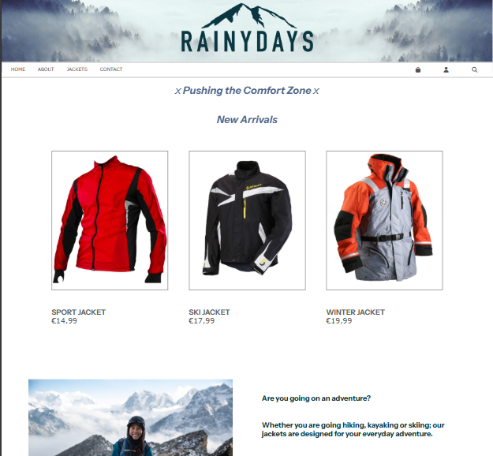
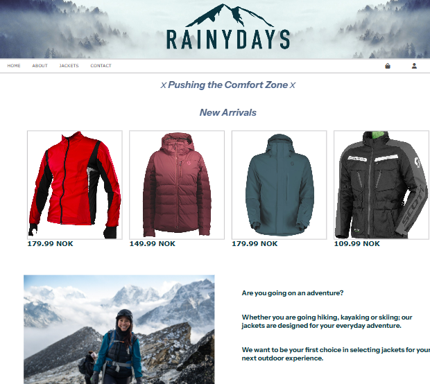
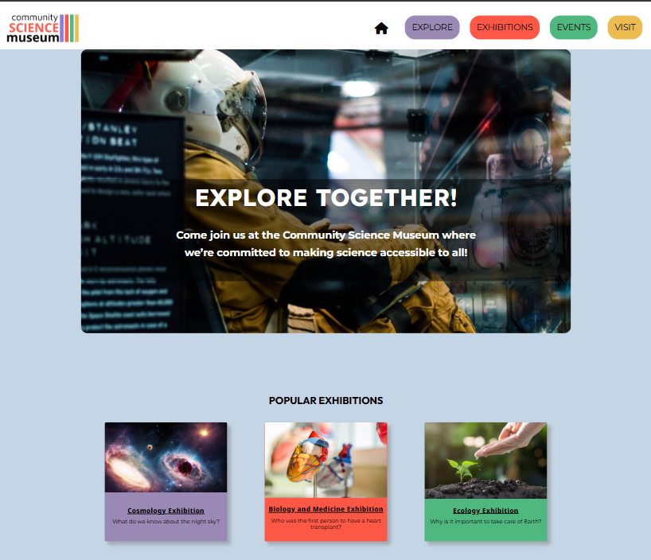

Frontend Developer Student

Cross Course Project
A modern, responsive HTML & CSS website featuring outdoor jackets, nature photography, and an interactive shopping experience.

JavaScript 1
A dynamic website called Rainydays using JavaScript: integrating Noroff API products, filtering, cart, and checkout experience.

Semester Project 1
A colourful, responsive HTML and CSS website for a community science museum designed to engage children and families.